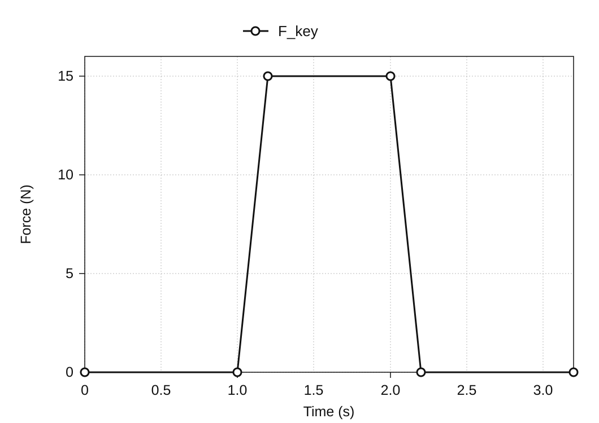
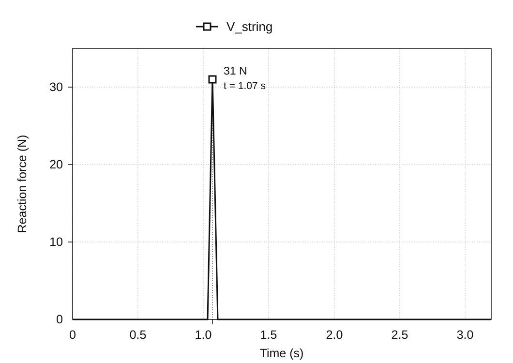

Motion Analysis of the Piano Action
January 2020
Overview
A grand piano’s action is the system of levers that transfers a keystroke to a hammer, which rises to strike a string and set it vibrating. This project recreated the action as a 3D model in SolidWorks* and used motion analysis to examine how input at the key translates into hammer speed and reaction force at the string.
The mechanism was modeled from scratch using reference images, then examined in two analyses: the relationship between the downward speed of the key and the upward speed of the hammer, and the relationship between the force applied to the key and the reaction force at the string. The simulation results were compared with theoretical values calculated from the model’s dimensions and pivot locations to check how it transmitted motion and force.
* SolidWorks is a 3D CAD system with tools for structural analysis of parts and motion analysis of mechanisms.


Building a piano-action model for analysis
How a keystroke makes the hammer strike
The piano action converts the downward motion of a key into the upward motion of a hammer. Pressing a key moves the capstan, wippen, jack, and repetition lever together, raising the hammer to strike the string. The player makes a single keystroke, but inside the mechanism, several parts rotate around different pivots and transfer motion through contact.
The 3D model includes the key, hammer, jack, wippen, repetition lever, capstan, damper, damper lever, and wire, along with their supporting frame. To model the motion, each part’s pivot and its points of contact with other parts had to be defined.
Building the 3D model from a cross-sectional drawing
Each part was modeled from scratch in 3D by tracing its outline over a cross-sectional drawing of the piano action. The parts were then assembled, with fixed connections and rotational joints corresponding to the physical mechanism. Defining these relationships turned the geometry into an analysis model that could move under applied forces.


Verifying the assembly’s degrees of freedom
The assembly contains nine moving parts, excluding the fixed frame, for a total of 54 unconstrained degrees of freedom. Fixing the capstan and wire to other parts removes 12 degrees of freedom. Rotational joints on the remaining seven parts remove another 35, leaving the CAD assembly with 7 degrees of freedom:
54 − 12 − 35 = 7
SolidWorks’ constraint diagnostics also reported 7 estimated and 7 actual degrees of freedom, with 0 redundant constraints. This confirmed that the parts and constraints defined for this project had been assembled as intended; it does not establish the degrees of freedom of every physical piano action.

Two analyses of key input
The model was examined in two separate analyses. Analysis 1 compared key speed with hammer speed. Analysis 2 compared the force applied to the key with the reaction force at the string. Separating these input–output relationships made the complex linkage easier to analyze using geometric speed ratios and lever balance.
For comparison, the mechanism was simplified into rotating elements and analyzed theoretically. Agreement between the theoretical and simulated values would indicate that the model’s motion was consistent with its specified dimensions and constraints.

Analysis 1: From key speed to hammer speed
For the speed calculation, the action was simplified into three rigid bodies: the key, an intermediate mechanism centered on the wippen, and the hammer. Treating motion as a sequence of contacts from ① to ③ made it possible to analyze the linkage as three stages of rotation.

All points on a rigid body share the same angular velocity. If r is the distance from the pivot and v is the linear speed at that point, then v = ωr. Assuming that speed transfers between bodies without loss at each contact point, hammer speed can be calculated by multiplying the output-to-input radius ratios across the three stages, then multiplying that product by key speed.
vhammer = (r1′ r2′ r3′ / r1 r2 r3) vkey

Input conditions and results
In SolidWorks Motion Analysis, a downward force of 5 N was applied at the end of the key. The linear speeds of the key end and hammer were recorded. Immediately after the force began, their peak speeds were 1,027 mm/s and 4,284 mm/s, respectively, giving a simulated hammer-to-key speed ratio of about 4.17.

| Quantity and method | Speed |
|---|---|
| Key (simulation) | 1,027 mm/s |
| Hammer (theory) | 4,614 mm/s |
| Hammer (simulation) | 4,284 mm/s |
Comparison with theory
The measured radii were r1 = 200 mm, r1′ = 88 mm, r2 = 53 mm, r2′ = 78 mm, r3 = 16 mm, and r3′ = 111 mm. Substituting these values gives an idealized speed ratio of about 4.49. At a key speed of 1,027 mm/s, the predicted hammer speed is 4,614 mm/s.

The simulated hammer speed of 4,284 mm/s was about 7% below the theoretical value, while showing a similar degree of speed amplification. The theoretical calculation uses three idealized rigid bodies, whereas the simulation represents the individual parts. The numerical difference alone does not establish its cause.
Analysis 2: From key force to string reaction force
In the second analysis, a downward force of 15 N was applied to the key surface, and the reaction force at the string was recorded at impact. The key input, Fkey, began increasing at 1.0 seconds and reached 15 N. The reaction force, Vstring, peaked at 31 N when the hammer struck.


For comparison, a simplified lever-balance calculation was made using the arm lengths on the key and hammer sides.
Vstring = (15 × 195) / 94 = 31.1 N
Using arm lengths of 195 mm on the input side and 94 mm on the string side gives a static lever-balance comparison value of 31.1 N. This is 0.1 N above the simulated peak of 31 N. The conditions under which this static calculation can be applied to the instantaneous reaction-force peak at impact still need confirmation.

Comparing simulation with theory
Results of the two comparisons
In analysis 1, the theoretical hammer speed was 4,614 mm/s, compared with 4,284 mm/s in the simulation. In analysis 2, the static lever-balance comparison value was 31.1 N, compared with a simulated peak of 31 N. Both comparisons showed close agreement between the 3D model and the theoretical calculations.
Interpreting the differences
The theoretical calculation reduces the action to three rigid bodies and assumes that motion and force transfer through their contact points without loss. The simulation represents the individual components instead. These different representations are important when interpreting the results, but attributing the remaining gap to energy loss or material deformation requires confirmation of the simulation settings.
Conclusion
The 3D simulation closely matched the theoretical comparisons for hammer speed and string reaction force. Within these comparisons, the model built from a cross-sectional drawing reproduced the transfer of motion and force expected from the specified geometry and constraints.
The project connected several stages of modeling: interpreting a cross-sectional drawing, translating relationships between parts into CAD constraints, and simplifying the assembly into a mechanical model suited to each analysis.